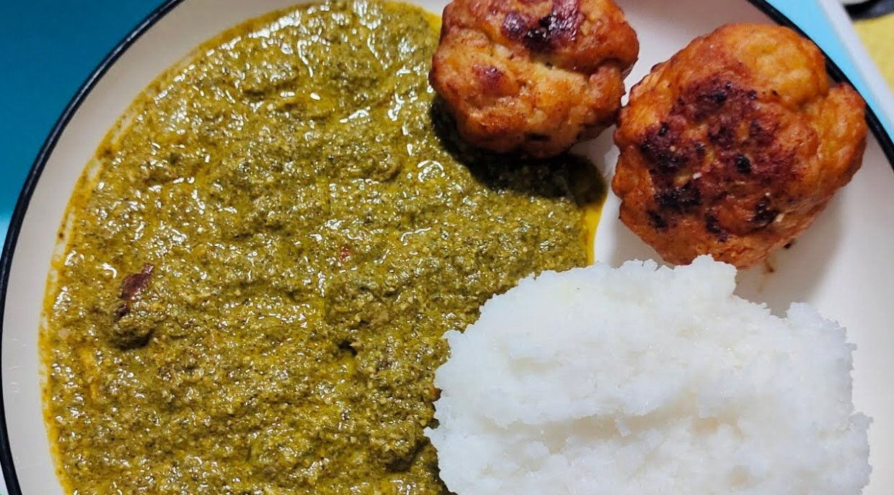

Isombe

A Rwandan favourite of slow-cooked cassava leaves thickened with groundnut flour and palm oil, often served with plantain, rice or cassava.
Ingredients
- 500 g pounded cassava leaves
- 1 eggplant, diced
- 1 green bell pepper, chopped
- 2 onions, chopped
- 3 garlic cloves
- 3 tbsp groundnut (peanut) flour
- 2 tbsp palm oil
- 3 cups water
- 1 tsp salt
- 100 g dried fish (optional)
Instructions
Step 1
Wash and finely pound or blend fresh cassava leaves. If using frozen pounded leaves, thaw them first.
Step 2
Boil the leaves in water for at least 45 minutes. Cassava leaves must be cooked thoroughly.
Step 3
Add onions, garlic, eggplant, bell pepper and the dried fish if using. Cook 20 minutes.
Step 4
Mix the groundnut flour with a little water, then stir it in with the palm oil. Simmer 15 to 20 minutes until thick and creamy.
Step 5
Season with salt and serve hot with plantain, rice or ugali.
Video tutorial
Nutrition per serving
| Calories | 220 kcal |
|---|---|
| Carbohydrates | 18 g |
| Protein | 9 g |
| Fat | 13 g |